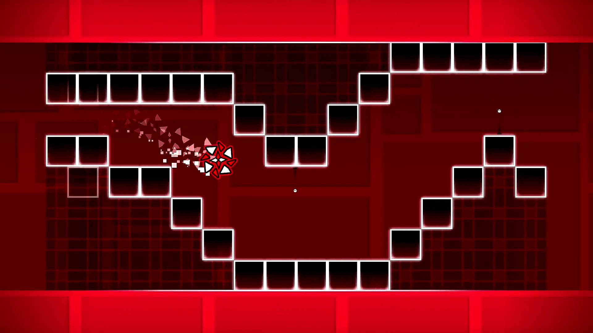
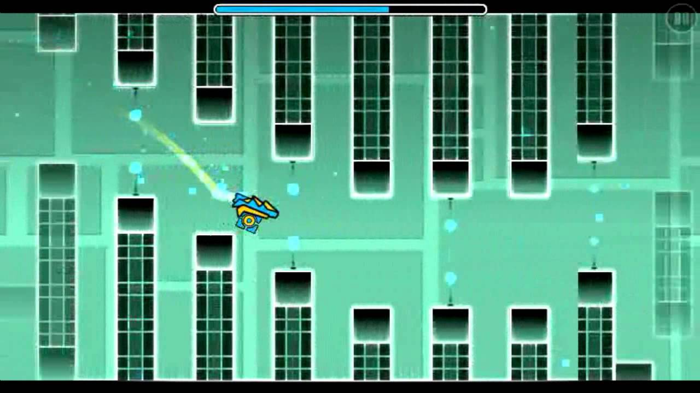

THE NIGHTMARE

vidéo du niveau |
"The Nightmare is a 1.2/1.7 solo Easy Demon created, verified, and published by Jax. It is the most downloaded and liked Demon level in the game, appearing first on the list when searching for Demons without any filters. It is the second level in the Demon Pack 3. The level was created early in the game's history (2013) and is the third-rated Demon in the game. The level was later updated to be significantly more difficult and have extra visual effects. Despite its popularity, the level has received criticism for its repetitive gameplay and design AKA not being so particle/effect heavy it gave everyone who played it seizures and eye damage." |

